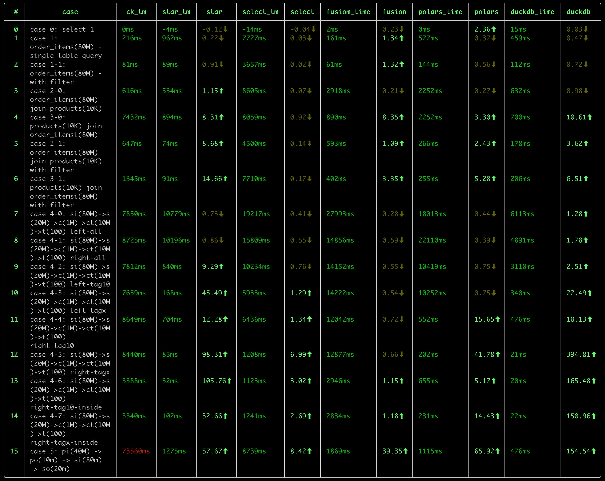
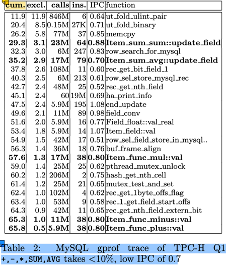
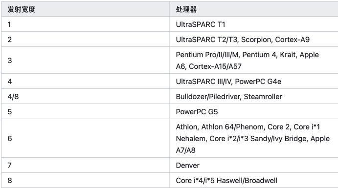

前言
duckdb 是一款优秀的 OLAP 数据库，有如下的特点：
-
快速。
我之前进行了一次 OLAP 数据库的性能测试，对比了包括 ClickHouse, DuckDB, StarRocks, DorisDB, DataFusion， Pola.rs 在内的 几款数据库， DuckDB 在好几项测试中，都处在领先位置。

-
轻量
DuckDB 的二进制文件大小只有 40MB 左右，没有任何依赖。相比 clickhouse(~440M) 来说，小了一个数量级。
而且，DuckDB 无需任何配置，即可使用，可处理 csv、parquet、json 等格式的文件数据，也可以使用 duckdb 自身的数据库格式，其使用 风格非常类似于 sqlite, 是一个 serverless 风格的数据库，也非常适合于嵌入式应用。
除了发布版本的的轻量之外，duckdb 的源代码量也很轻量，并且可以在各种平台中编译，源代码的结构较为清晰，适合于学习。
-
SQL 支持能力强。
作为一款轻量的数据库，我很惊讶于 duckdb 对 SQL 的支持程度：
- 比如 JOIN 支持，很多的数据库都不支持 Full Join，Semi Join, Anti Join 等操作（虽然可以使用其他方式进行改写，但既不自然，也不便于性能优化）
- 集合操作：支持 Union, Union All, Intersect, Except 等操作。后两者很多数据库都不支持。
- 窗口函数的支持力度。mysql 算是支持比较好的，但无法表示出“同期年累积值”（去年1月1日至1年前的今天）这样的窗口范围。ClickHouse 则对基于 日期的窗口计算乏善可陈。在这方面, DuckDB 的支持力度是最好的。
- CTE 支持。 没有 CTE 的 SQL 语句，很多时候会变得难以阅读，难以维护。我们在处理类似于 PowerBI 的双向筛选时，生成了非常复杂的 SQL 语句， 要理解这条 SQL 语句，有时1-2小时都讲不出清楚，但采用 CTE 后就变得简单、清晰很多。duckdb 良好的支持 CTE，并且有针对 CTE 的优化， 这使得不仅 SQL 简单、易读，而且查询性能也更优秀。
- 对 list 数据类型 的支持，以及丰富的 list 处理函数。
在我碰到的一个对
count(distinct X)类型的度量进行小计、合计时，如果是传统的方式，势必针对每个聚合层次做一次重新计算，而采用 list 类型后，我们完全可以仅使用 一次 SCAN 结合 窗口函数，完成这个需求，这对于大数据量下的查询来说，可以显著提升性能。
上面仅列举了这段时间来我发现的一些能力，估计，随着对 duckdb 的深入研究，以及定制能力的挖掘，藏在 duckdb 内部还会有更多的宝藏会冒出来。
-
扩展能力。
目前还只是简单的浏览了一下 Extensions 的文档，实验了一下 mysql 扩展提供的外部数据源 连接能力，体会到 duckdb 强大的扩展能力。
- 数据类型扩展，参考 Inet Extension
- 外部数据源扩展。参考 MySQL Extension，包括了函数、表函数、Pushdown 的扩展。
- 自定义函数扩展。参考
- scalar function
- aggregate function
- table function
- window function
当然，强大的扩展能力也是建立在良好的 模块化设计 的基础之上的。这也使得更有必要学习一下这款优秀的数据库的源代码了。
-
活跃的社区
DuckDB 目前来看，在社区是棘手可热的：
- 官网版本更新频繁。转正为 1.0.0 版本后，目前，每个月都有一个小版本的更新。
- 文档较为完善。
- Blog 更新较为频繁，介绍了很多新的优化、特性。
- Youtube 上有很多的视频教程。
- 国内也有很多的关注者，在知乎上有很多的文章介绍 duckdb 的使用和源代码分析的文章。
作为一名数据分析产品的开发者，我在了解 DuckDB 后，越发感觉到需要深入的学习 duckdb, 主要有以下的几个原因：
-
引入 duckdb 作为公司核心产品的数据分析的引擎，简化产品产品架构、提升产品的能力，尤其是在性能方面的提升。
目前，我们的产品有两个分析引擎：
- SQL 分析引擎：将前端（仪表盘等可视化组件、AI）分析查询转换为 SQL 执行。目前这种方式对度量的复杂度有较大的局限，诸如时间的各种快速计算、 表间计算 等难以有效支持。 (对源数据库的 SQL 方言适配工作量过于复杂。当产品要支持 40+ 各异的数据源时，SQL 方言几乎是一件不可能的任务。)
- MDX 分析引擎。 MDX 分析引擎对复杂度量的表达能力支持，理论上是无上限的，但这种方式的计算模型偏重于 Top-Down 的递归函数计算，在数据的访问 主要是 Pull 式的，在复杂的计算场景下，会面临性能问题。如果将 Top-Down + Pull 模型转换为 Bottom-Up + Push 模型，避免对数据源的重复 Scan 和 重复计算，是提升这类计算引擎的关键措施。
对于 SQL 分析引擎，如何将一个复杂的 前端查询， 表示为 SQL 查询计划，在引入 duckdb 之前与 引入 duckdb 之后，在架构上会有很大的不同，甚至于 有进一步的空间（即我们直接生成 物理执行计划，并在物理执行计划中添加与前端分析匹配的自定义算子的方式），这一块，目前还处在一个相对朦胧的阶段， 有待内部进一步实验后，再进行分享。
当然，无论是浅度的依赖，还是深度的依赖，都需要对 duckdb 的源代码有一个深入的了解，才能做到更多的驾驭能力，否则，很多东西是不敢想，不敢做，或者 是遇到内部问题，难以跨越的。
-
学习一款完整的 OLAP 分析引擎，了解更多的技术细节。
SQL 执行自身是一个复杂的过程，从基础的火山模型，到向量版的火山模型、到 Pipeline 执行模型，从 Tree 解释执行到 JIT 编译执行，从传统的计算算子 到 向量化的 算子，每一个领域都有很多的算法、优化技术。学习这些知识，是一个很有乐趣的过程。 或许，duckdb 并不是终点，而可能是一个新的起点。
后续，我会在这个系列中，记录我对 duckdb 的学习过程，包括：
- 数据结构
- 整体处理流程
- 特定的优化技术
- 对 OLAP.NEXT 技术的一些思考记录
Parse
Resolve
Logical Plan
Optimizer
Physical Plan
Vector
向量化(Vectorization) 是 OLAP 的核心技术。在《MonetDB/X100: Hyper-Pipelining Query Execution》论文中，介绍了使用向量化技术带来的 性能提升，其主要原因是：
- 传统的以 tuple-at-a-time 为单位的 Pull 模型，CPU 大部份消耗在 tuple 的运输(pull)上，实际的计算占比 < 10%（图中为8.8%）。参见下图： 
- 即使在这 8.8% 的计算中，其 IPC(Instructions Per Cycle) 也不高，只有 0.8。即平均每个时钟周期只执行了 0.8 条指令。而现在的服务器 CPU 是多发射架构，intel skylake 每个时钟周期理论上可以执行4条指令。 这与 tuple-at-a-time 的计算模型有关。  来源：https://zhuanlan.zhihu.com/p/645343994 (具体的发射大小文档待查)
- 现代的 CPU 支持 SIMD 指令集，可以在一个时钟周期内执行多个相同操作的指令，这样可以提高计算效率。128/256/512 位的 SIMD 寄存器，可以在单条 指令中操作 4/8/16 个 32-bit 的计算 或者 2/4/8 个 64-bit 的计算。
- tuple-at-a-time 的计算模型，对 CPU 的缓存友好性不好。无论是 I-cache 还是 D-cache，这些都会影响 IPC 的提升。
使用向量化优化后，
- 从 tuple-at-a-time 的 Pull 模型，改变为 morsel-at-a-time 的 Push 模型，每个 morsel 的大小可以很好的匹配 CPU 的缓存行大小。从而 提升缓存的命中率。
- morsel-at-a-time 的模式，大大的减少了处理循环，提高了有效运算的占比。
- 结合 SIMD 指令，从原来的 0.8 的 IPC 显著提升到等效的 16-64， 计算处理也得以大幅度提升。
本文以 duckdb 的示例为例，介绍 Vector 的数据结构设计，常用的向量化操作，以及对这一块性能优化的一些思考。
DuckDB Vector 数据结构
参考文档：Vector官网介绍资料。
class Vector {
VectorType vector_type; // FLAT_VECTOR, FSST_VECTOR, CONSTANT_VECTOR, DICTIONARY_VECTOR, SEQUENCE_VECTOR
LogicalType type; // boolean, integer, date, varchar, etc.
data_ptr_t data; // uint8_t*, 指向数据的指钨
ValidityMask validity; // 标识某个元素是否是 null
shared_ptr<VectorBuffer> buffer; // data 的容器
shared_ptr<VectorBuffer> auxliary; // 向量的动态数据部份的数据容器
}
以基础的 FlatVector(integer) 为例，其内存布局如下：
vector_type: i8 -- FLAT_VECTOR
type: [i8, 24]
- id: i8 -- INTEGER
- physical_type: i8
_ type_info : nullptr [i8,16]
data: i32* -- 指向 buffer.data 中区域
validity: [i8, 32]
- validity_mask: u64* -- bitmap，其 owner 由 validity_data 持有
- validity_data: shared_ptr<ValidityBuffer>
- target_count: u64 = 2048
buffer: shared_ptr<VectorBuffer> -- owner data
- buffer_type
- aux_data: nullptr
- data: nullptr -- 管理 vector.data 的所有权
auxliary: nullptr -- FlatVector(integer) 不需要额外的存储空间
-
data: T_ITEM* 这里的 T_ITEM 是向量中元素的值类型，对 INTEGER 等定长类型，其值类型是 i32。
-
对 VARCHAR，使用的是 string_t 结构，定义如下：
union { // 16 bytes struct { // length > 12 时存储前4个字符，后面的字符存储在 auxliary 中 uint32_t length; char prefix[4]; char *ptr; } pointer; struct { // length <= 12 时，直接存储在 inlined 中 uint32_t length; char inlined[12]; } inlined; } value;思考： 如果 string_t 调整为 24 或者 32 字节大小，则 INLINE 可以存储 12/20 字节，在进行字符串的比较时，是否会有更好的性能？
对 VARCHAR 类型来说，string_t 是定长的，可以作为数组形式存储在 buffer 中（vector.data 是对 buffer 中的引用），而变长部份 则存储在 auxliary 中。 这个存储设计非常类似于编程语言中的 stack 和 heap: stack 中存储定长部份，heap 中存储变长部份。
-
List 类型。DuckDB 支持 List ，不仅在 SQL 级别支持 list 数据类型及一系列的 list 操作函数，在引擎内部，也会依赖 List 类型来处理计算。
struct list_entry_t { // list_entrt_t 是定长的，存储在 buffer 中 idx_t offset; // 指向在 auxliary 中的变长部份开始位置 idx_t length; // list 的长度 };思考：这种设计就无法支持 list 的动态添加了。在将 list 作为聚合函数时，随着新的数据加入，list会不断的增长，这个就需要使用其他的数据结构来支持了。
- 目前还没有看懂这一块的向量的构建过程。
-
-
buffer: 数据的生命周期。
（我之前的C++经验还停留在 C++ 11之前的手动new/delete是经验，现在通过智能指针后，delete操作就基本上不需要了）这种模式是引用智能指针后 C++ 的常见的内存管理模式，rust 的内存管理思想与这个也是高度一致的。虽然 Rust 的设计是从 C++ 的最佳实践中衍生出来的，不过，不妨碍我用 Rust 来 反向理解 C++。
buffer 与 data 之间的关系满足：（在 Vector.Resize 方法中有这个假设：）
// data: unique_ptr<[T_ITEM]>; // T_ITEM 数组 // data = buffer->data.get() auto new_data = make_unsafe_uniq_array_uninitialized<data_t>(target_size); // new [T_ITEM; n] memcpy(new_data.get(), resize_info_entry.data, old_size); // resize_info_entry.buffer->SetData(std::move(new_data)); // buffer->data = new_data resize_info_entry.vec.data = resize_info_entry.buffer->GetData(); // data = buffer->data.get()- TODO 似乎有一些子类型的 VectorBuffer 不满足这个契约，例如 DictionaryBuffer 通过 sel_vector 来访问 data， VectorChildBuffer 通过重载的 data: Vecotr 来管理数据。这些子类型似乎并不满足 Vector::Resize 中的这个契约。
-
auxliary:
Execution
学习 duckdb 的源代码，我是首先从 Execution 这一部份开始的：
- 虽然从结构上来看，Execution 是整个系统的最后一步，但秉着“以终为始”的学习原则， 从 Execution 开始，可以更好的了解整个系统的核心。从 Parser 到 Logical Plan 到 Optimizer 到 Physical Plan，都是在为 Execution 这一步做准备。
- DuckDB 的性能优化的关键，也是在 Execution 这一步，其核心是 Pipeline 的机制和 Vector 的数据结构。
理解了 Pipeline 和 Vector，再结合几个主要的 Operator 原理，就可以对 DuckDB 的执行机制有一个初步的认识了。
参考文档
- DuckDB internals
- Push-Based Execution In DuckDB
- 知乎链接 DuckDB Push-Based Execution Model
代码调试技巧
- 在 duckdb shell 中 使用
explain statement或者explain analyze statement查看执行计划。 - PipelineExecutor::Execute(idx_t max_chunks) 是 Pipeline 的执行入口，可以从这里添加断点，开启一个 Pipeline 的调试。
-. watches:
this->pipeline.ToString()查看当前 Pipeline 的信息。 或者this->pipeline.Print()在 console 中 查看当前 Pipeline 的 信息。 一次SQL 执行会产生多个 Pipeline，仅在满足条件的 Pipeline 上设置断点。 -. watches:this->pipeline.source->ToString(ExplainFormat::TEXT)查看当前 Pipeline 的 Source 信息。 -. 在调试的 Variables 面板中，可以查看 pipeline 的 source, operators, sink 的信息，在对应的 operator 上设置断点。 - source 节点的入口是:
PhysicalXxxOperator::GetData(ExecutionContext &context, DataChunk &chunk, OperatorSourceInput &input)， 可以在这里设置断点，查看 source 的执行流程。 - operator 节点的执行入口是：
PhysicalXxxOperator::Execute(ExecutionContext &context, DataChunk &input, DataChunk &chunk, GlobalOperatorState &gstate, OperatorState &state - sink 节点的执行有3个入口：
PhysicalXxxOperator::Sink(ExecutionContext &context, DataChunk &chunk, OperatorSinkInput &input)PhysicalXxxOperator::Combine(ExecutionContext &context, OperatorSinkCombineInput &input)PhysicalXxxOperator::Finalize((Pipeline &pipeline, Event &event, ClientContext &context, OperatorSinkFinalizeInput &input)
在阅读代码过程中，可以通过上述的调试技巧，找到需要学习的代码的入口点，设置断点后，跟着调试器一步一步的阅读代码，并在 Variables 中查看各个变量的 值，理解数据流和代码执行流程。
接下来，我们将从一些简单的SQL 执行示例出发，来阅读 Execution 模块的源代码。
一个简单的关联、分组聚合查询的执行计划分析
sql
select name, count(freight), sum(freight)
from sale_orders so
left join customers c on c.customer_id = so.customer_id
where name = 'IB89Nf23kAom'
group by name;
Physical Plan
flowchart BT
TS1[Table Scan: customers
projections: customer_id,name
filters: name = ? ]
TS2[Table Scan: sale_orders
projections: customer_id, freight
filters: customer_id >= 1
]
F1[Filter
customer_id <= 999999
]
HJ[Hash Join]
Projection1[Projection
name, freight
]
HashGroupBy1[Hash Group By
Groups: #0
Aggregates: count_start, sum #1
]
TS1 --> F1
TS2 --> HJ
F1 --> HJ
HJ --> Projection1
Projection1 --> HashGroupBy1
Pipeline
flowchart BT
subgraph pipelin1
TableScan1[Table Scan: customers
projections: customer_id,name
filters: name = ?
]
Filter1[Filter
customer_id <= 999999
]
HashJoin1[Hash Join]
end
subgraph pipelin2
TableScan2[Table Scan: sale_orders
projections: customer_id, freight
filters: customer_id >= 1
]
Projection1[Projection
name, freight
]
HashGroupBy1[Hash Group By
Groups: #0
Aggregates: count_start, sum #1
]
end
TableScan1 --> Filter1
TableScan2 --> HashJoin1
Filter1 --> HashJoin1
HashJoin1 --> Projection1
Projection1 --> HashGroupBy1
pipelin1 --> pipelin2
- 执行计划拆分为多个 pipeline, 每个 pipeline 是一个从 Source 到 Sink 的 Push 模型.
- 如何根据物理执行计划生成 pipeline ?
- 多个 pipeline 之间构成了一个依赖图，依赖的 pipeline 执行完毕后，被依赖的 pipeline 才能执行。
- 每个 pipeline 会被拆分为多个 Task(分区并行)，每个 Task 相当于一个最小的调度单元。
- 当 Pipeline 的所有 task 执行完毕，这个 pipeline 才执行完毕，可以执行被依赖的的 pipeline。
- 在 Pipeline 中有3种角色：
-
Source: 管道的起点，从外部设备读取数据。（IO 阻塞式：这是否会降低系统的处理能力？）
-
GetData(): 读取数据
Source 需要考虑并发，与单个任务相关的数据存储在 localState 中，与整个管道相关的数据存储在 globalState 中。
- globalState 存储在 pipeline 中，同一个 pipeline 的所有 task 共享，设计到并发安全控制时，需要加锁
- localState 存储在 PipelineExecutor 中。由 PipelineExecutor 负责创建和销毁。 不同的 Source 节点有自己的 localState/globalState 定义。
-[ ] 执行计划是如何处理分区的？
-
-
Operator: pure function
- Execute(): 处理单个批次的输入数据，无需考虑并发安全。
-
Sink: 管道的终点，需要协调多个任务的结果，进行合并
- Sink(): 处理单个批次的输入数据
- Combine(): 单个 Task 的全部 Source 处理完毕，进行单个任务内的合并。（其他任务可能会 Sink/Combine）
- Finalize(): 所有 Task 处理完毕，进行最终的合并。
考虑到存在并发问题，需要区分 localState 和 globalState，不同的 Sink 节点有自己的 localState/globalState 定义。
-
主要算子的执行逻辑
PhysicalTableScan (Source in pipeline1 & pipeline2)
- 分区如何处理？ Source 侧如何处理并发？
- 每次 Pipeline Execute最多 50 个 Chunk?
- bind_data 指向 DataTable
- 为 TableScanBindData 增加 ToString 方法，方便调试
- unordered_map 无法显示， 考虑为 ScanFilterInfo/TableScanState 添加 ToString 方法
- 实际入口：TableScanFunc() 负责读取数据 // 边界：TableFunction，可能要对比 from table 与 from csv_read 的执行流程的区别
PhysicalFilter (Operator in pipeline1)
- filter 表达式的计算流程？（解释执行的成本如何？）
- 这一块的代码是否会进行 SIMD 优化？
BinaryExecutor::SelectGenericLoop<…>(const int *, const int *, const SelectionVector *,
const SelectionVector *, const SelectionVector *, unsigned long long, ValidityMask &,
ValidityMask &, SelectionVector *, SelectionVector *) binary_executor.hpp:444
--- 这个方法才是最终的向量执行代码，在前面有5-6层的解释和 dispatch 过程，其向量化是通过 compiler auto-vectorization 实现的。
BinaryExecutor::SelectGenericLoopSelSwitch<…>(const int *, const int *, const SelectionVector *,
const SelectionVector *, const SelectionVector *, unsigned long long, ValidityMask &,
ValidityMask &, SelectionVector *, SelectionVector *) binary_executor.hpp:459
BinaryExecutor::SelectGenericLoopSwitch<…>(const int *, const int *, const SelectionVector *,
const SelectionVector *, const SelectionVector *, unsigned long long, ValidityMask &,
ValidityMask &, SelectionVector *, SelectionVector *) binary_executor.hpp:475
BinaryExecutor::SelectGeneric<…>(Vector &, Vector &, const SelectionVector *,
unsigned long long, SelectionVector *, SelectionVector *) binary_executor.hpp:491
BinaryExecutor::Select<…>(Vector &, Vector &, const SelectionVector *,
unsigned long long, SelectionVector *, SelectionVector *) binary_executor.hpp:515
TemplatedSelectOperation<…>(Vector &, Vector &, optional_ptr<…>, unsigned long long,
optional_ptr<…>, optional_ptr<…>, optional_ptr<…>) execute_comparison.cpp:104
VectorOperations::LessThanEquals(Vector &, Vector &, optional_ptr<…>, unsigned long long,
optional_ptr<…>, optional_ptr<…>, optional_ptr<…>) execute_comparison.cpp:345
ExpressionExecutor::Select(const BoundComparisonExpression &, ExpressionState *,
const SelectionVector *, unsigned long long, SelectionVector *,
SelectionVector *) execute_comparison.cpp:369
ExpressionExecutor::Select(const Expression &, ExpressionState *, const SelectionVector *,
unsigned long long, SelectionVector *, SelectionVector *) expression_executor.cpp:236
ExpressionExecutor::SelectExpression(DataChunk &, SelectionVector &) expression_executor.cpp:90
PhysicalFilter::ExecuteInternal(ExecutionContext &, DataChunk &, DataChunk &, GlobalOperatorState &, OperatorState &) const physical_filter.cpp:45
......
当然，要对比一下在 release 模式下，是否会进行编译优化？从这个执行栈来看，这个解释过程还是很啰嗦的。如果进行更好的特化或者 TypedIR 的方式，相信在这一块的 执行效率会更高。
template <class LEFT_TYPE, class RIGHT_TYPE, class OP, bool NO_NULL, bool HAS_TRUE_SEL, bool HAS_FALSE_SEL>
static inline idx_t
SelectGenericLoop(const LEFT_TYPE *__restrict ldata, const RIGHT_TYPE *__restrict rdata,
const SelectionVector *__restrict lsel, const SelectionVector *__restrict rsel,
const SelectionVector *__restrict result_sel, idx_t count, ValidityMask &lvalidity,
ValidityMask &rvalidity, SelectionVector *true_sel, SelectionVector *false_sel) {
idx_t true_count = 0, false_count = 0;
for (idx_t i = 0; i < count; i++) {
auto result_idx = result_sel->get_index(i);
auto lindex = lsel->get_index(i);
auto rindex = rsel->get_index(i);
if ((NO_NULL || (lvalidity.RowIsValid(lindex) && rvalidity.RowIsValid(rindex))) &&
OP::Operation(ldata[lindex], rdata[rindex])) {
if (HAS_TRUE_SEL) {
true_sel->set_index(true_count++, result_idx);
}
} else {
if (HAS_FALSE_SEL) {
false_sel->set_index(false_count++, result_idx);
}
}
}
if (HAS_TRUE_SEL) {
return true_count;
} else {
return count - false_count;
}
}
TODO: 这个方法是最终的向量化执行代码，依赖于编译器的 auto-vectorization，这段代码是否高效呢？ 可以截取一段特化的汇编代码，来看看其是否高效？
- l_sel, r_sel 的操作可否向量化？
- l_validity, r_validity 的操作可否向量化？
从代码执行流程来看，这个解释执行的过程似乎还是有较高的成本：
-
通过模版技术，根据不同的数据类型、操作符等分派编译，避免在循环处理中进行分支判断操作。
case class Node(operator, left, right): val leftVector = left.execute() val rightVector = right.execute() operator(leftVector, rightVector) -- 这里 operator 是一个向量化的特化版本函数 // a > b && a < 10 Node( BooleanAnd, Node( IntegerGT, a, b), Node( IntegerLT, a, 10) ) -
TypedIR 直接编译成为 SIMD 代码，在一个函数内，完成多个子表达式的计算，共享寄存器，减少 load 操作，执行速度会更快。
这个方式感觉是最理想的，不过开发的成本可能会比较高，而且这个JIT自身的开销如何也需要考虑。
-
此外，在这个SQL中，Optimizer 似乎引入了一个不必要的 filter: customer_id <= 999999 当行数很大时，这个耗时是没有必要的。
PhysicalHashJoin (Sink in pipeline1)
PhysicalHashJoin (operator in pipeline2)
PhysicalProjection (Operator in pipeline2)
PhysicalHashAggregate (Sink in pipeline2)
Pipeline 调度
-
Pipeline Task 的创建
-
主要数据结构
- 画一个 class diagram, 理清楚这几个类的 CRC。
- Event 这个类是干什么的？
-
Executor: (共享粒度)
- physical_plan
- owned_plan
- root_pipeline
- pipelines
-
Pipeline: 共享粒度，存储 global state，多线程访问需要考虑加锁
- source operator
- operators
- sink operator
- source_state: global state for Source
- sink.sink_state: global state for Sink
-
PipelineExecutor (线程粒度)
- pipeline
- thread_context
- ExecutionContext
- local_source_state
- local_sink_state
-
PipelineTask is a ExecutorTask(线程粒度) 在执行过程中有哪些是变化的？
- ExecutorTask:
- task ?
- executor: Executor
- event
- thread_context
- op ?
- pipeline: Pipeline
- pipeline_executor: PipelineExecutor (每个线程一个 PipelineExecutor 示例，存储 localState )
- ExecutorTask:
-
ExecutionContext(client: ClientContext&, thread, pipeline)
Pipeline
-
DuckDB pipeline 与 Clickhouse pipeline 的差异？
Operators
seq_scan
filter
projection
hash_join
hash_group_by
我们使用示例 SQL 语句来学习 hash_group_by 算子的原理：
select name, count(freight), sum(freight)
from sale_orders so
left join customers c on c.customer_id = so.customer_id
where gender = 'M' and name like 'abc%' and freight > 10 and freight < 50
group by name
在执行计划中，可以看到如下的 hash_group_by 算子， 该算子是 pipeline 的 Sink 节点，其谦虚处理节点为： join |> projection |> hash_group_by
┌───────────────────────────┐
│ HASH_GROUP_BY │
│ ──────────────────── │
│ Groups: #0 │
│ │
│ Aggregates: │
│ count_star() │
│ sum(#1) │
│ │
└─────────────┬─────────────┘
对应的源代码为： src/execution/operator/aggregate/physical_hash_aggregate.cpp
class PhysicalHashAggregate : public PhysicalOperator {
//! The grouping sets, SQL 中分组+聚合的设置信息
GroupedAggregateData grouped_aggregate_data;
vector<unique_ptr<Expression>> groups; // 分组字段， 在这里例子中是 name
vector<vector<idx_t>> grouping_functions; // 这个例子中没有使用分组函数
vector<LogicalType> group_types; // 分组字段的类型， 在这里例子中是 VARCHAR
vector<unique_ptr<Expression>> aggregates; // 聚合表达式， 这里是 count(freight), sum(freight)
vector<LogicalType> payload_types; // freight 字段的类型
vector<LogicalType> aggregate_return_types; // 聚合函数的返回类型, 这里是 BIGINT, BIGINT
vector<BoundAggregateExpression *> bindings; // 对应聚合函数的 binding 信息
idx_t filter_count;
vector<GroupingSet> grouping_sets;
//! The radix partitioned hash tables (one per grouping set)
vector<HashAggregateGroupingData> groupings;
unique_ptr<DistinctAggregateCollectionInfo> distinct_collection_info;
//! A recreation of the input chunk, with nulls for everything that isnt a group
vector<LogicalType> input_group_types;
// Filters given to Sink and friends
unsafe_vector<idx_t> non_distinct_filter;
unsafe_vector<idx_t> distinct_filter;
unordered_map<Expression *, size_t> filter_indexes;
}
class HashAggregateLocalSinkState: public LocalSinkState {
DataChunk aggregate_input_chunk;
vector<HashAggregateGroupingLocalState> grouping_states; // 保存对每个grouping的状态信息
// operator.local_state.grouping_states[group_idx].table_state.ht 存储一个 hashtable
AggregateFilterDataSet filter_set;
}
class HashAggregateGlobalSinkState: public GlobalSinkState {
vector<HashAggregateGroupingGlobalState> grouping_states;
vector<LogicalType> payload_types;
//! Whether or not the aggregate is finished
bool finished = false;
}
class AggregateFunction: public BaseScalarFunction {
//! The hashed aggregate state sizing function
aggregate_size_t state_size; //
//! The hashed aggregate state initialization function
aggregate_initialize_t initialize;
//! The hashed aggregate update state function
aggregate_update_t update;
//! The hashed aggregate combine states function
aggregate_combine_t combine;
//! The hashed aggregate finalization function
aggregate_finalize_t finalize;
//! The simple aggregate update function (may be null)
aggregate_simple_update_t simple_update;
//! The windowed aggregate custom function (may be null)
aggregate_window_t window;
//! The windowed aggregate custom initialization function (may be null)
aggregate_wininit_t window_init = nullptr;
//! The bind function (may be null)
bind_aggregate_function_t bind;
//! The destructor method (may be null)
aggregate_destructor_t destructor;
//! The statistics propagation function (may be null)
aggregate_statistics_t statistics;
aggregate_serialize_t serialize;
aggregate_deserialize_t deserialize;
//! Whether or not the aggregate is order dependent
AggregateOrderDependent order_dependent;
//! Additional function info, passed to the bind
shared_ptr<AggregateFunctionInfo> function_info;
}
分别在 Sink 方法, Combine 方法， Finalize 方法中添加断点，调试执行该算子的代码，跟踪其执行流程，进一步理解该算子的数据结构、算法。
TODO:
- 理解 duckdb 是如何通过 template 来实现不同类型的聚合函数的处理的。
- sum(x) 是如何映射到特定版本的函数的？
Storage
CLI
read_csv 表函数分析
-
ReadCSVBind – 返回表的 schema 信息，主要是列名 和 类型信息。
typedef unique_ptr<FunctionData> (*table_function_bind_t)( ClientContext &context, TableFunctionBindInput &input, vector<LogicalType> &return_types, vector<string> &names );在 Plan 阶段，会调用, 返回值 FunctionData 会传递到后续调用中，例如 TableFunctionInput.bind_data;
-
ReadCSVFunction – main function
typedef void (*table_function_t)( ClientContext &context, TableFunctionInput &data, DataChunk &output );在 Pipeline 执行阶段，有 Source Operator 调用。
- 为什么是3个线程在执行？
- 这三个线程是如何协作的？例如并行处理文件的行数？
-
ReadCSVInitGlobal – 可选
-
ReadCSVInitLocal – 可选
CVS Scanner: 按照每 8M 一个 scanner , 每个 scanner 分配一个扫描范围:
- 如果一个 scanner 扫描完了当前block，需要继续扫描下一个 scanner 的数据，直到遇到一个换行符。
- 对非第一个 scanner，会先忽略直到第一个换行符的数据
优化： CSV Scanner 是否可以考虑使用 SIMD 加速？
StringValueScanner: BaseScanner:
- BaseScanner
- iterator: CSVIterator
- pos: CSVPosition( buffer_idx, buffer_pos) – 当前位置
- boundary: CSVBoundary( buffer_idx, buffer_pos, boundary_idx, end_pos ) – 边界
- CSVFileHandle
- CSVOptions
- iterator: CSVIterator
duckdb::CSVBuffer::CSVBuffer(duckdb::CSVFileHandle &, duckdb::ClientContext &, unsigned long long, unsigned long long, unsigned long long, unsigned long long) csv_buffer.cpp:28 duckdb::CSVBuffer::CSVBuffer(duckdb::CSVFileHandle &, duckdb::ClientContext &, unsigned long long, unsigned long long, unsigned long long, unsigned long long) csv_buffer.cpp:25 duckdb::make_shared_ptr<…>(duckdb::CSVFileHandle &, duckdb::ClientContext &, unsigned long long &, unsigned long long &&, unsigned long long &, unsigned long long &&) helper.hpp:73 duckdb::CSVBuffer::Next(duckdb::CSVFileHandle &, unsigned long long, unsigned long long, bool &) csv_buffer.cpp:44 duckdb::CSVBufferManager::ReadNextAndCacheIt() csv_buffer_manager.cpp:42 duckdb::CSVBufferManager::GetBuffer(unsigned long long) csv_buffer_manager.cpp:71 duckdb::CSVIterator::Next(duckdb::CSVBufferManager &) scanner_boundary.cpp:54 duckdb::CSVGlobalState::Next(duckdb::optional_ptr<…>) global_csv_state.cpp:143 duckdb::ReadCSVInitLocal(duckdb::ExecutionContext &, duckdb::TableFunctionInitInput &, duckdb::GlobalTableFunctionState *) read_csv.cpp:212 -- 会调用 TableFunction.init_local 进行初始化，调用 global_state.Next() 获取 当前任务的一个 CSV-Scanner duckdb::TableScanLocalSourceState::TableScanLocalSourceState(duckdb::ExecutionContext &, duckdb::TableScanGlobalSourceState &, const duckdb::PhysicalTableScan &) physical_table_scan.cpp:75 duckdb::TableScanLocalSourceState::TableScanLocalSourceState(duckdb::ExecutionContext &, duckdb::TableScanGlobalSourceState &, const duckdb::PhysicalTableScan &) physical_table_scan.cpp:71 duckdb::make_uniq<…>(duckdb::ExecutionContext &, duckdb::TableScanGlobalSourceState &, const duckdb::PhysicalTableScan &) helper.hpp:65 duckdb::PhysicalTableScan::GetLocalSourceState(duckdb::ExecutionContext &, duckdb::GlobalSourceState &) const physical_table_scan.cpp:84 -- 每个 PipelineExecutor 中的 Source/Sink 都会有 local state duckdb::PipelineExecutor::PipelineExecutor(duckdb::ClientContext &, duckdb::Pipeline &) pipeline_executor.cpp:27 duckdb::PipelineExecutor::PipelineExecutor(duckdb::ClientContext &, duckdb::Pipeline &) pipeline_executor.cpp:14 duckdb::make_uniq<…>(duckdb::ClientContext &, duckdb::Pipeline &) helper.hpp:65 duckdb::PipelineTask::ExecuteTask(duckdb::TaskExecutionMode) pipeline.cpp:34 duckdb::ExecutorTask::Execute(duckdb::TaskExecutionMode) executor_task.cpp:44 duckdb::TaskScheduler::ExecuteForever(std::__1::atomic<…> *) task_scheduler.cpp:189 duckdb::ThreadExecuteTasks(duckdb::TaskScheduler *, std::__1::atomic<…> *) task_scheduler.cpp:279CSVGlobalState:
- fileScans:
vector<shared_ptr<CSVFileScan>>; 每一个 csv 文件一个 CSVFileScan- file_path
- file_size: 文件大小
- buffer_manager: 管理文件的多个 buffer
- cacheed_buffers:
vector<CSVBuffer>– 每个 CSVBuffer 对应一个 PipelineExecutor- buffer_idx
- actual_buffer_size
- handle – 指向 buffer 数据 每次 CSVGlobalState.Next() 获取下一个 StringValueScanner 时，会分配一个 Buffer(8M)，将文件数据读取到 buffer 中。在后面 scan 处理 时，从内存中进行读取。
- cacheed_buffers:
- 这一块的代码写得很复杂。
-
table_function.pushdown_complex_filter 可选
在 Optimizer 阶段，会调用。
- 在前面应该有一个处理 bind_data 的阶段，获取表的 types, names 等信息。
[ ] 需要整理出一个 table_function 的调用时序图，帮助理解每一个可选函数存在的价值。
阅读了上述信息后，可以开始评估编写我们自己的 table function 了，接下来，我们需要的一个场景是：
- 在 Java 中使用 JDBC 读取业务数据，将 ResultSet 写入到一个 DataChunk 中。（提供API 写 data chunk）
- 创建一个 table function，将 DataChunk 中的数据返回给 DuckDB。
DataChunk chunk = new DataChunk();
// prvoide
connection.registerDataChunk("asdf", chunk);
connection.executeQuery("select * from read_asdf");
或者： jdbc ResultSet -> arrow.vector.VectorSchemaRoot -> ArrowStreamReader -> arrow.c.ArrowArrayStream -> duckdb
import org.apache.arrow.memory.BufferAllocator;
import org.apache.arrow.memory.RootAllocator;
import org.apache.arrow.vector.VectorSchemaRoot;
import org.apache.arrow.vector.ipc.ArrowStreamWriter;
import org.apache.arrow.vector.ipc.message.ArrowRecordBatch;
import org.apache.arrow.vector.types.pojo.Schema;
import org.apache.arrow.c.ArrowArrayStream;
import org.apache.arrow.c.ArrowArrayStreamListener;
import java.io.ByteArrayOutputStream;
import java.io.IOException;
public class ArrowConversionExample {
public static ArrowArrayStream convertToArrowArrayStream(VectorSchemaRoot root) throws IOException {
BufferAllocator allocator = new RootAllocator(Long.MAX_VALUE);
ByteArrayOutputStream out = new ByteArrayOutputStream();
ArrowStreamWriter writer = new ArrowStreamWriter(root, null, out);
// Write the VectorSchemaRoot to the output stream
writer.start();
writer.writeBatch();
writer.end();
// Create an ArrowArrayStream from the output stream
ArrowArrayStream arrayStream = new ArrowArrayStream();
arrayStream.setListener(new ArrowArrayStreamListener() {
@Override
public void onNext(ArrowRecordBatch batch) {
// Handle the ArrowRecordBatch
}
@Override
public void onError(Throwable t) {
// Handle the error
}
@Override
public void onCompleted() {
// Handle completion
}
});
// Initialize the ArrowArrayStream with the written data
arrayStream.init(out.toByteArray(), allocator);
return arrayStream;
}
public static void main(String[] args) throws IOException {
// Example usage
BufferAllocator allocator = new RootAllocator(Long.MAX_VALUE);
Schema schema = new Schema(/* define your schema here */);
VectorSchemaRoot root = VectorSchemaRoot.create(schema, allocator);
// Populate the VectorSchemaRoot with data
// ...
ArrowArrayStream arrayStream = convertToArrowArrayStream(root);
// Use the ArrowArrayStream
// ...
}
}
这个方式是有复制的，需要考虑如何减少复制。
- https://arrow.apache.org/docs/java/jdbc.html
- https://duckdb.org/docs/api/java#arrow-import
- ArrowReader
- Field(name, nullable, type, …)
- Schema(fields, metadata)
- batches: List[ArrowRecordBatch]
- ArrowRecordBatch( length, nodes, buffers) // each field encode in a buffer
这一块需要研究一下，整体成本相比自己实现可能会简单一些。
- Pipeline::Schedule 负责创建 PipelineTask 并提交调度。 对 TableScan, 会调用 source_state->MaxThreads() 获取最大线程数，然后创建对应的 PipelineTask，一般会调用 对应 operator.globalState.MaxThreads() 对 CSV 文件，取文件大小 / 8M
- TODO 理解 PipelineEvent
Extensions
Typed IR
使用 Typed IR 来作为 Physical Plan 的输入：
- 可以将 Executor 作为一个独立的模块。
- Executor 可以独立嵌入到的应用中，由其他的应用生成 TypedIR，然后交给 Executor 执行。
- TypedIR 可以手工编写，独立优化、调试，更好的进行新 operator 的开发、测试、优化工作。
subquery optimization
subquery 的优化包括：
- 将 行级的 subquery 转换为 batch的 JOIN 操作
表达能力：
- 与 MDX 的 Top-Down + Pull 模型匹配，可以支持复杂的度量计算。
- 类似于 DAX 的 Calculate 函数，修改查询上下文。
Misc
- DataType
- Value
- Vector[DataType]
- FlatVector
- DictionaryVector
- ConstantVector
- SequenceVector
- SelectorVector ……
- DataChunk
- Operator
- Filter
- Projection
- Join
- Hash Group - Aggregate
- Window
- Pipeline